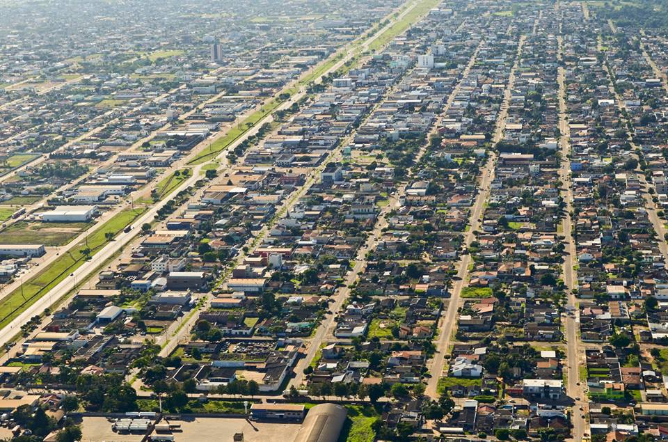

Principais Fases Históricas: • Povos Indígenas: Antes da ocupação não indígena, a região da Chapada dos Parecis e do Cone Sul de Rondônia era habitada há milhares de anos por diversos povos originários. • A Comissão Rondon (1910): A história oficial do núcleo urbano começou por volta de 1910, quando o Tenente-Coronel Cândido Rondon passou pela região com a Linha Telegráfica Cuiabá–Porto Velho. Um posto telegráfico foi instalado no Planalto dos Parecis. • Origem do Nome: O nome "Vilhena" foi uma homenagem de Rondon a Álvaro Coutinho de Melo Vilhena, engenheiro-chefe da Organização da Carta Telegráfica Pública. O núcleo inicial desenvolveu-se às margens do Rio Pires de Sá. • Abertura de Estradas (Década de 1950): O crescimento da região ganhou impulso com a abertura da BR-29 (atual BR-364), construída no governo de Juscelino Kubitschek. • Colonização e Emancipação (Década de 1970): Com a distribuição de terras pela União e a instalação do Projeto de Colonização Paulo de Assis Ribeiro em 1974, a cidade atraiu migrantes de várias partes do Brasil. Vilhena foi oficialmente emancipada e criada como município em 23 de novembro de 1977 (pela Lei nº 6.448, sancionada em 11 de outubro de 1977
População Atual: A população estimada de Vilhena atingiu 110.708 habitantes, segundo dados oficiais divulgados pelo IBGE. • Crescimento Expressivo: A cidade consolidou-se como o 3º município mais populoso de Rondônia, superando Ariquemes e ficando atrás apenas de Porto Velho e Ji-Paraná. • Migração e Perfil: Historicamente, Vilhena possui forte influência migratória de famílias vindas das regiões Sul e Sudeste do Brasil, atraídas pelas frentes de colonização agrícola nas décadas de 1970 e 1980. Isso reflete-se até hoje no perfil cultural, na arquitetura e nos costumes locais. Economia Atual A economia é diversificada e consolidou Vilhena como o polo financeiro e comercial do Cone Sul de Rondônia, com um PIB aproximado de R$ 5,1 bilhões e um PIB per capita muito superior à média regional. Recentemente, a cidade foi eleita em rankings nacionais como a melhor cidade média da Região Norte em crescimento econômico e gestão fiscal.
